Segway Spritztour in der Region

Erleben Sie mit uns den Eifel Dom aus vielen Perspektiven und vielen landschaftlichen Highlights bei unserer Segway
Tour rund um Kalterherberg am Hohen Vennganz in der Nähe von Monschau.
Tourdauer ca. 75 min
Treffpunkt: Wanderparkplatz Kalterherberg oder Küchelscheid.
Preis pro Teilnehmer: € 39
Segway Rurtal Tour
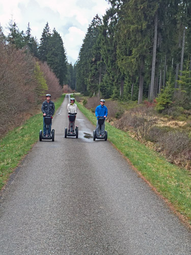
Wir starten mit Ihnen bei dieser Segway Tour von Küchelscheid über den Ravelweg bis zum Kloster Reichenstein. Nach
einem kurzen Abstecher zu der Nobertus-Kapelle fahren wir durch das Rurtal zurück nach Küchelscheid.
Tourdauer ca. 90 min
Treffpunkt: Taverne a Lutze
Preis pro Teilnehmer: € 49
Segway Romantiktour
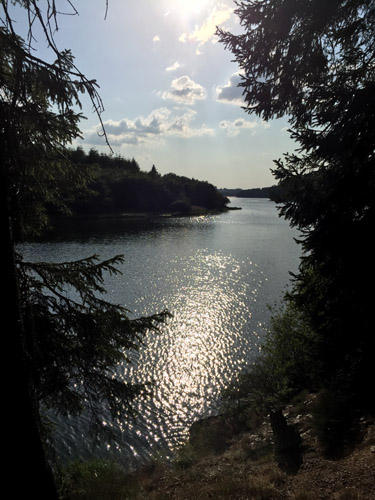
Wir starten mit Ihnen im Zentrum von Bütgenbach und bewegen uns nach einer kleinen Spritztour durch Bütgenbach über
den Ravelweg auf den Rundweg um den Bütgenbacher See vorbei an vielen romantischen und eindrucksvollen Aussichtspunkten.
Tourdauer ca. 90 min
Treffpunkt: Parkplatz im Zentrum von Bütgenbach.
Preis pro Teilnehmer: € 49
Segway Rursee Tour durch Rurberg und Woffelsbach
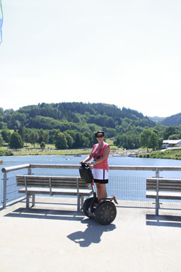
Genießen Sie den Rursee am Nationalpark Eifel gemütlich mit dem Segway
Tourdauer ca. 120 min
Treffpunkt: Paulushof in Rurberg
Preis pro Teilnehmer: € 59
Segway Citytour Monschau
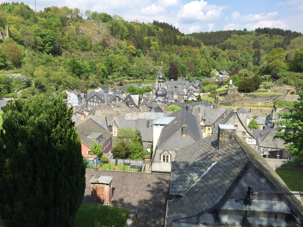
Erleben Sie mit uns die Altstadt von Monschau bequem auf dem Segway. Wir starten vom Hotel Carat zur Burg mit dem
wunderschönen Blick über Monschau und nach einem Abstecher ins Grüne geht es durch die romantische Altstadt zum Marktplatz und vorbei am
Roten Haus zurück zum Ausgangspunkt.
Tourdauer ca. 90 min
Treffpunkt: Parkplatz Hotel Carat.
Preis pro Teilnehmer: € 49
Malmedy Höhentour
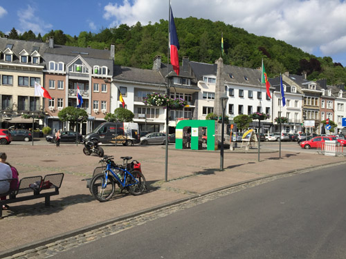
Nach der ausführlichen Einweisung starten wir auf dem Ravelweg. Anschließend erkunden wir die Innenstadt von Malmedy
auf dem Segway bevor wir den steilen Weg auf die Anhöhen um Malmedy erklimmen. Dort genießen wir einen seltenen Blick auf die Stadt..
Tourdauer ca. 90 min
Treffpunkt: Parkplatz Proxy.
Preis pro Teilnehmer: € 49
Spa und Umgebung
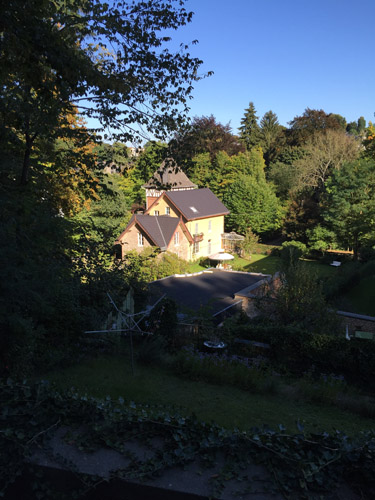
Nach der Einführung fahren wir zum Lac de Warfa und über den romantischen Reiterweg zurück nach Spa und crusen dann
durch die Satdt.
Tourdauer ca. 90 min / 120 min
Treffpunkt: Parkplatz Boulevard des Anglais
Preis pro Teilnehmer: € 49 / € 59
Prüm und Umgebung
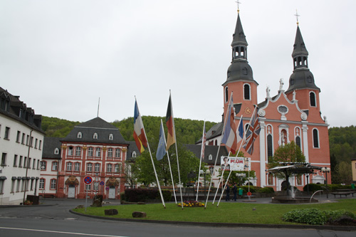
Erleben Sie Prüm und das nahe Umfeld mal ganz anders.
Tourdauer ca. 90 min / 120 min
Treffpunkt: Gerberweg
Preis pro Teilnehmer: € 49 / € 59
Segway Tour durch die Rheinauen in Bonn
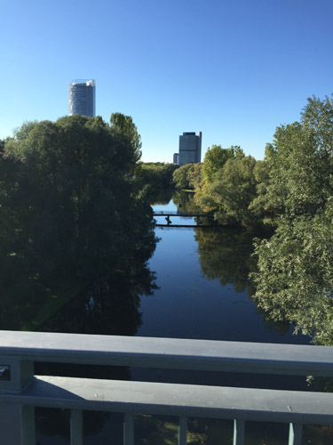
Erleben Sie die Rheinauen ganz relaxt auf dem Segway
Tourdauer ca. 150 min
Treffpunkt:
Preis pro Teilnehmer: € 69
Segway Tour durch Bonn City
Bonn ganz anders mit dem Segway erleben
Tourdauer ca. 150 min
Treffpunkt:
Preis pro Teilnehmer: € 69
Segway Tour durch Köln City
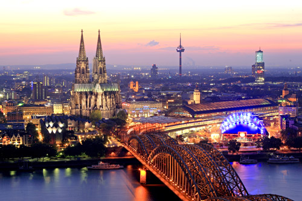
Erleben Sie den Flair von Köln auf dem Segway oder gleiten Sie mit uns am Rheinufer entlang
Tourdauer ca. 90 min / 120 min
Treffpunkt:
Preis pro Teilnehmer: € 59 € / € 69
Segway Tour durch Düsseldorf City
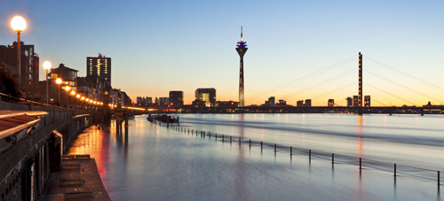
Erleben Sie den Flair von Düsseldorf auf dem Segway oder gleiten Sie mit uns am Rheinufer entlang
Tourdauer ca. 90 min / 120 min
Treffpunkt:
Preis pro Teilnehmer: € 59 € / € 69
Segway Tour durch Maastricht City
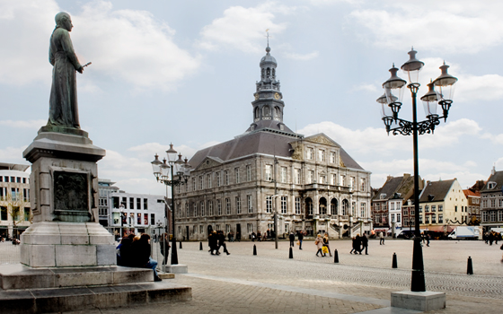
Gleiten Sie auf dem Segway durch das nostalgische Maastricht und erleben Sie die Maas mal anders.
Tourdauer ca. 90 min
Treffpunkt: nach Absprache
Preis pro Teilnehmer: € 55
Segway Tour durch Eupen City und Umgebung
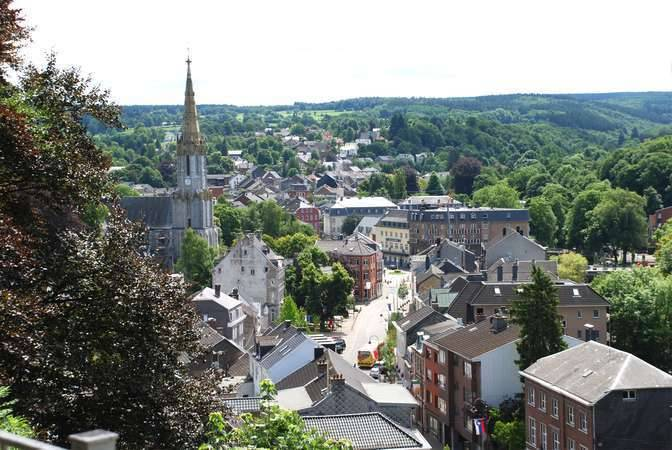
Erleben Sie Eupen Stadt und die nähere Umgebung bequem mit dem Segway
Tourdauer ca. 90 min
Treffpunkt:
Preis pro Teilnehmer: € 49
Segway Tour Trier
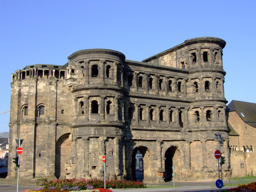
Eine Segway Tour vorbei an den wunderschönen Sehenswürdigkeiten der Römerstadt Trier.
Tourdauer ca. 120 min
Treffpunkt:
Preis pro Teilnehmer: € 79
Segway Tour in Bitburg und Umgebung
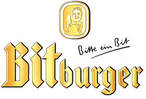
Erleben Sie Bitburg und das nähere Umfeld von Bitburg bequem mit dem Segway.
Tourdauer ca. 90 min
Treffpunkt:
Preis pro Teilnehmer: € 59
Segway Tour in Schleiden
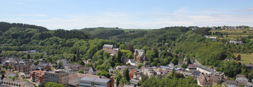
Erleben Sie Schleiden und Olef bequem mit dem Segway.
Tourdauer ca. 90 min
Treffpunkt: Parkplatz Schleiden
Preis pro Teilnehmer: € 49
Segway Tour in St´Vith und Umgebung
Erleben Sie St´Vith und das nähere Umfeld bequem mit dem Segway.
Tourdauer ca. 90 min
Treffpunkt:
Preis pro Teilnehmer: € 59
Erlebnistour
Starten Sie mit uns über den Ravelweg vorbei am Kloster Reichenstein und der Nobertus-Kapelle. Nach einem Abstecher am
Eifel Dom tauchen Sie in die Vielfalt des Perlbachtales ein. Wir leiten Sie vorbei an der einzigartigen Landschaft um die
Perlbachtalsperre und erreichen nach einem Abstecher durch Monschau wieder unseren Ausgangspunkt.
Tourdauer ca. 180 min
Treffpunkt: Monschau Carat Hotel oder Monschau Bahnhof oder Kalterherberg Bahnhof.
Preis pro
Teilnehmer: € 79
Schnitzeltour
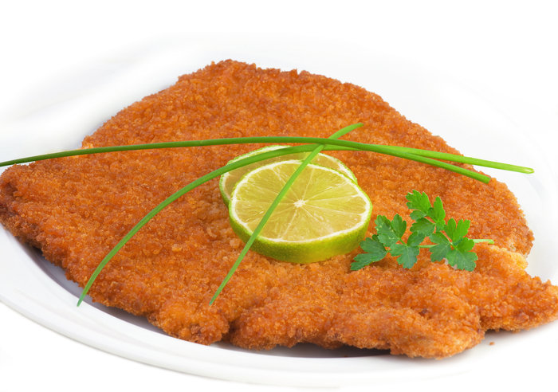
Jeden zweiten und vierten Dienstag im Monat starten wir mit Ihnen bei dieser Segway Tour vom Hotel Hirsch über den Ravelweg bis zum
Kloster Reichenstein. Nach einem kurzen Abstecher zu der Nobertus-Kapelle fahren wir durch das Rurtal zurück nach Küchelscheid.
Zurück
in Kalterherberg wird Ihnen im Hotel Restaurant Hirsch ein schmackhaftes Schnitzel Ihrer Wahl mit Beilagen serviert.
Tourdauer ca. 90 min
Treffpunkt: Hotel Restaurant Hirsch.
Preis pro Teilnehmer: € 50
Segway Wein Tour in Bernkastel-Kues
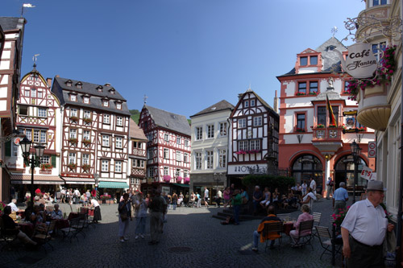
Crusen Sie mit dem Segway durch die wunderschöne Altstadt von Bernkastel-Kues und erleben Sie die Weinbege anders.
Tourdauer ca. 150 min
Treffpunkt:
Preis pro Teilnehmer: € 89
Erlebnistour
Starten Sie mit uns über den Ravelweg vorbei am Kloster Reichenstein und der Nobertus-Kapelle. Nach einem Abstecher am
Eifel Dom tauchen Sie in die Vielfalt des Perlbachtales ein. Wir leiten Sie vorbei an der einzigartigen Landschaft um die
Perlbachtalsperre und erreichen nach einem Abstecher durch Monschau wieder unseren Ausgangspunkt.
Tourdauer ca. 180 min
Treffpunkt: Monschau Carat Hotel oder Monschau Bahnhof oder Kalterherberg Bahnhof.
Preis pro
Teilnehmer: € 79
Ravelweg Tour
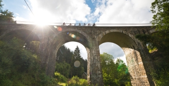
Erleben Sie den Ravelweg in einer ganz besonderen Art von Konzen nach Kalterherberg und zurück über Monschau.
Tourdauer ca. 180 min
Treffpunkt: Konzen Bahnhof
Preis pro Teilnehmer: € 79
Ravelweg XXL
4 Stunden über den Ravelweg vorbei an unterschiedlichsten Landschaften.
Tourdauer ca. 240 min
Treffpunkt: Konzen Bahnhof
Preis pro Teilnehmer: € 89
Senfmühlentour
Segwaytour in und um Monschau mit anschliessendem 3-Gangmenü im Schnabuleum
Tourdauer ca. 90 min
Treffpunkt: Parkplatz Senfmühle
Preis pro Teilnehmer: € 79,50
Buchbar jeden Mittwoch
Rurufer Radweg / Zerkall
Segwaytour über den Rurufer Radweg nach Zerkall
Tourdauer ca. 90 min
Treffpunkt: Bahnhof in Schlagstein
Preis pro Teilnehmer: € 49